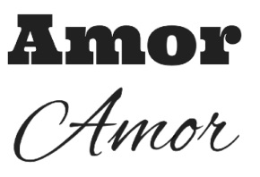
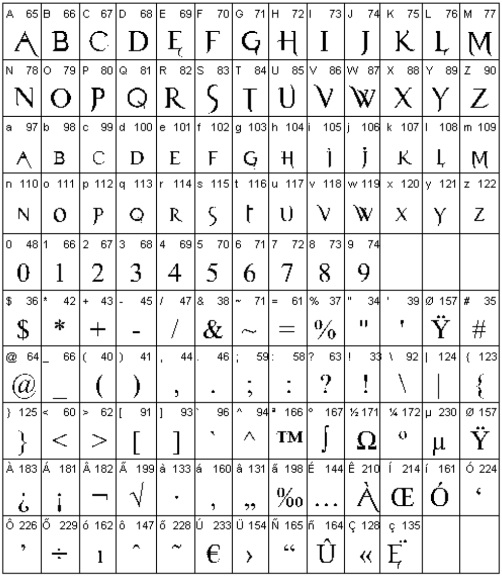
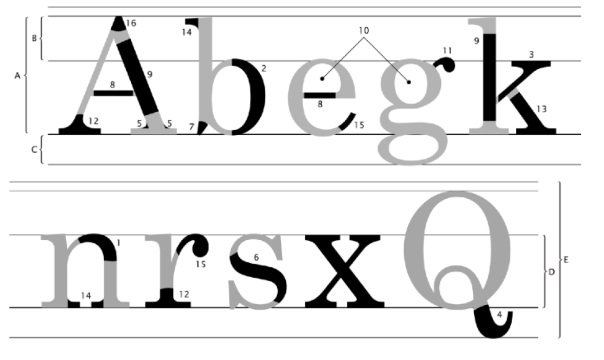
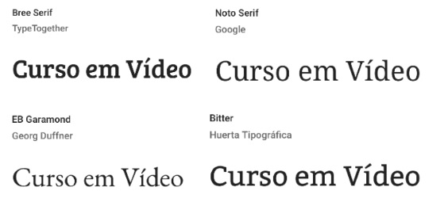
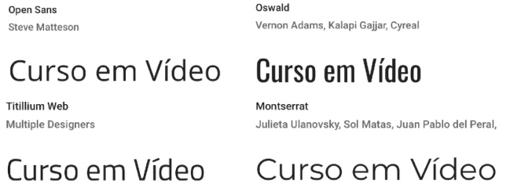
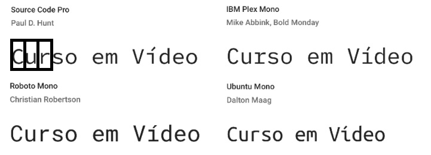
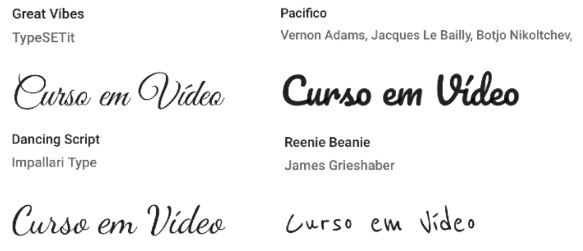
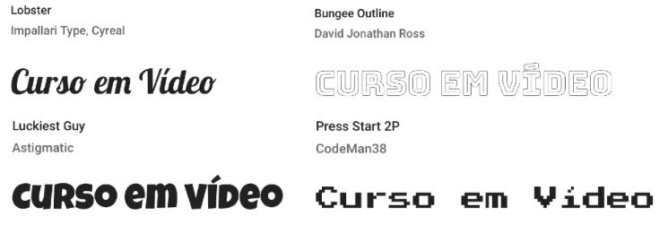

Tipografia
Importância da escolha de uma fonte
assim como as cores, as fontes podem influênciar no inconciente das pessoas, às levando a ter uma ideia, sensação ou sentimento
Observe uma representação da palavra "amor"
Com certeza, a melhor fonte para se representar a palavra "amor" seria a segunda, por causa do amor ser algo suave e fluido.
Mas nem sempre a escolha é tão simples, afinal, temos que nos preocupar com a legibilidade. Se colocar uma fonte de difícil leitura em um site com muito texto, por exemplo, faria com que as pessoas não consumissem nosso conteúdo.
Glifo, família e fonte
Glifos, letras, caracteres
Signos alfabéticos projetados para a reprodução mecânica
Ex: abcdefgh
Família Tipográfica
Conjunto de glifos que mantém suas características anatômicas, independentemente de sua variação(light, regular, semi-bold, bold, extra-bold)
Ex:abcdefgh / abcdefgh
Fontes
Conjunto de Glifos que formam uma família tipográfica
Anatomia do Tipo
A - Altura das maúsculas: Altura que as letras maiúsculas vão ocupar. Geralmente um pouco menor que a soma da ascendente com a mediana (< B + D)
B - Ascendente: Parte das letras maiúsculas que se ergue acima da linha mediana.
C - Descendente: Parte das letras minúculas que passa por baixo da linha de base.
D- Altura-X: Tamém chamada de mediana, define o tamanho das letras minúsculas.Tem esse nome, pois se baseia no tamanho da letra x minúscula.
E - Corpo: É a soma de quatro medidas: ascendente + altura-x + descendente + espaço de reserva. É o tamanho total da letra. É o valor que escolhemos ao configurar o tamanho da fonte de um texto.
1 - Arco: presente em letras minúsculas. Uma linha curva que nasce na haste principal.
2 - Barriga: curva em uma letra maiúscula ou minúscula, fechada, ligada à haste principal.
3 - Braço: traço horizontal ou inclinado, ligado à haste vertical principal de uma letra maiúscula ou minúscula.
4 - Cauda: apêndice do corpo de algumas letras (g, j, J, K, Q, R), que fica abaixo da linha base.
5 - Enlace: a forma como uma haste, linha ou filete se liga a um arremate, a uma serifa ou a um terminal. Pode ser angular ou curvilíneo.
6 - Espinha: Curva e contracutva estrutural da letra S.
7 - Esporrão: uma projeção que encontramos nas letras b e G.
8 - Filete: haste horizontal ou inclinada, fechada nas duas extremidades. por duas hastes ou por uma curva.
9 - Haste: traço ptincipal de uma letram geralmente vertical.
10 - Olho: Espaço em btanco, fechadom dentro de uma letra.
11 - Orelha: apêndice presente na letra g, que pode ser em gota, botão, bandeira ou gancho.
12 - Pé: terminal ou serifa horizontal que arremata uma perna na parte de baixo.
13 - Perna: haste vertical ou inclinada com uma extremidade livre (ou com um pé) e outra extremidade ligada ao corpo da letra.
14 - Serifa: também chamada de apoio ou patilha. Pequenas retas que ornamentam as hastes de alguns tipos.
15 - Terminal: forma que arremata a extremidade de uma linha curva de uma letra.
16 - Vértice: também chamada de ápice. Formada pela convergência de duas hastes que se encontam. Pode ser pontiagudo, oblícuo, plano ou redondo.
Categoria de Fontes
Fontes serifadas
As serifas ajudam a guiar nossos olhos para uma rápida leitura da palavra. Nós humanos não lemos as palavras letra por letra, fazendo sua utilização ser muito boa para títulos, que visam uma atenção rápida do leitor.
Ex:
Fontes não serifadas
conhecidas por seu nome em francês sans-serif (sem serifa). Ótimas para exibição em monitores e passam uma sensação de limpeza e organização.
Ex:
Fontes monoespaçadas
As fontes monoespaçadas ocupam o mesmo espaço para todas as figuras, ou seja, todas possuem a mesma largura. A principal vantagem de seu uso é a extrema facilidade de leitura.
Ex:
Fontes script
Também chamada de handwriting, essa fonte tenta reproduzir a escrita humana.
Ex:
Fontes display
fogem de qualquer uma das características, focando apenas no seu visual com diversos efeitos visuais e enfeites, podendo até mesmo não ter letras. Também chamadas de fontes comemorativas.
Ex:
Medidas / Shorthand
link para a página que explica sobre as medidas utilizadas nas fontes e sobre o shorthand
Ferramentas
link para a página com a explicação das ferramentas ligadas à fontes
Alinhamentos
link para a página com a explicação sobre alinhamentos.